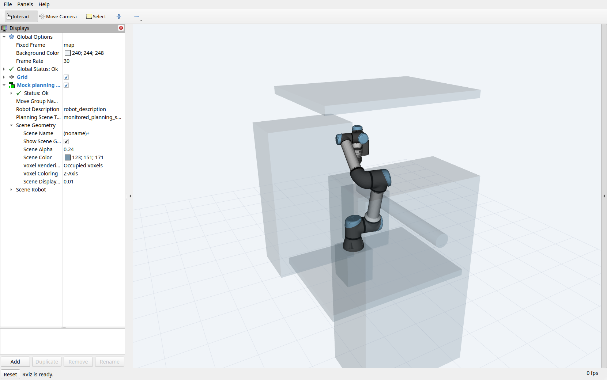

Calibration and planning scenes
EROBS needs an accurate robot model, camera transform, tool geometry, and workspace model. MoveIt uses this information to calculate motion and check collisions. Its planning scene contains the robot state and surrounding geometry.
What must match the installation
Geometry |
What it determines |
|---|---|
Arm calibration |
The link positions calculated from the robot’s joint states. |
Camera calibration |
The position and orientation of camera measurements relative to the arm. |
Tool geometry |
The working tip and collision shape of the attached tool. |
Cell geometry |
The obstacles used for collision checking. |
Correct the relevant geometry before compensating with task offsets. For example, a different suction cup changes the tool model; it does not require changing the arm calibration. See ePick cup geometry.
Arm and camera calibration
The CMS files below are relative to src/custom-ur-descriptions/cms_robot_description/.
Arm calibration: config/ur5e_calibration.yaml contains installation-specific kinematics. CMS bringup passes this file to both MoveIt and the UR driver so their robot models agree. For another robot, follow the official UR calibration guide. The separate LIX calibration file contains a placeholder, not measured LIX data.
Camera calibration: urdf/zivid_camera_mount.xacro defines the runtime transform from tool0 to zivid_optical_frame. The matrix in config/hand_eye_calibration.yaml records a calibration result; editing that YAML alone does not change the runtime transform.
After recalibration, update the Xacro transform, rebuild the affected packages, and regenerate the GUI’s expanded URDF. Restart the model consumers and verify the loaded transform. See runtime and GUI models for the separate loading paths.
The active Xacro comment dates the camera calibration to July 22, 2026 and records touch-test verification as pending. The stored result does not establish physical positioning accuracy.
When investigating an offset, record the requested frame, detected frame, selected tool tip, capture timestamp, and measured error. Compare one source of geometry at a time.
Static collision objects
The beamline’s scene_file selects the obstacle file. Both CMS configurations select src/beambot/config/beamline_scene.yaml, which currently contains seven objects.
After MoveIt starts, the lifecycle manager reads the file and sends the objects through /apply_planning_scene. It requires a successful response before startup continues. Boxes, cylinders, and spheres are supported. Omitting scene_file skips static obstacle loading.
Each object has a name, shape, reference frame, pose, and dimensions. Positions and dimensions use meters; roll, pitch, and yaw use radians. The current scene uses three frames:
mapfor the pedestal, table, stage, side obstacle, and top railing.baseforbeam_cylinder.base_linkfordetector.
The GUI scene is a separate preview. It reads the same YAML but ignores each object’s frame, drawing coordinates in its own world frame. A correct-looking GUI view does not confirm MoveIt’s placement. Check the actual scene in RViz and the transforms between its frames.
{kind=link}

The MoveIt planning scene in a mock-hardware session, with all seven objects confirmed through /get_planning_scene. The translucent shapes are configured obstacles. Open the full-resolution screenshot.
{kind=link}
Editing the YAML does not automatically update a running MoveIt scene. Apply an updated scene or reload the stack, then check object names, frames, dimensions, and placement. Refreshing the GUI alone does not update the planner.
Physical alignment of these objects with the installation has not been verified.
Marker-linked collision objects
Experimental
Marker-linked collision objects are experimental. Validate the marker IDs, offsets, and resulting scene placement before relying on them for collision checking.
collision_objects in the beamline YAML can associate an ArUco ID with a named shape, dimensions, and a tag_offset. During marker detection, the vision engine places that object using the detected pose and applies the offset along the marker’s axes. It sends the result through /apply_planning_scene and checks the response.
Both CMS configurations currently comment out the sample_bar example pending confirmation of the marker ID and dictionary. No marker-linked objects are enabled in those files. Detecting a marker does not add collision geometry unless an object is configured for it.
Octomap path
An Octomap represents occupied space from point-cloud measurements. EROBS provides this optional workflow in src/beambot/launch/octomap_mapping.launch.py; it is separate from normal bringup and does not trigger camera captures.
The data follows three steps:
Camera clouds on
/points/xyzpass throughmapping/pointcloud_relay.pyto/points/xyz_relayed.octomap_server_nodeintegrates those clouds inbase_link, using TF.mapping/octomap_to_planning_scene.pyforwards/octomap_binaryto MoveIt on/planning_scene.
The two mapping/ scripts live under src/beambot/beambot/.
Launch setting |
Default |
|---|---|
Map resolution and relay voxel size |
0.01 m |
Maximum sensor range |
2 m |
Ground filtering |
Disabled; ground and table points remain obstacles. |
Bridge update interval |
At least 0.5 seconds between published updates. |
Saved map |
|
A saved map is only the starting state. Live clouds keep updating it, and a MoveIt stack started later may not receive it until the bridge publishes again.
Running the relay alone uses a 0.02 m voxel size. Without Open3D, it forwards clouds without downsampling.
The bridge copies the incoming map without transforming it and publishes without waiting for MoveIt acknowledgement. Verify the map’s frame and placement in the planning scene. CMS joystick Servo also has Octomap collision checks disabled; see Joystick and Servo.
A merged survey PLY is a point-cloud file for inspection. It does not automatically become a collision map; see Survey mapping for that separate workflow.